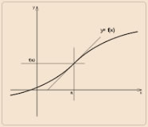
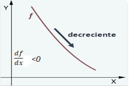

Límites a partir de tablas
Una función es una relación que se establece entre los elementos de dos conjuntos A y B (conocidos como dominio y rango), donde a cada elemento del conjunto A le corresponde un único y solamente un elemento de B.
Es el conjunto formado por las imágenes de cada elemento del conjunto de salida. Son los valores que toma la función "Y" (variable dependiente de acuerdo con los valores de x), por eso se denomina “f(x)”, su valor depende del valor que le da a "X". Gráficamente lo miramos en el eje vertical (ordenadas).
El Rango de una función es el conjunto formado por las imágenes f(x) de los valores de “X” que pertenecen al Dominio de dicha función.
Es el conjunto formado por los elementos que tienen imagen. Los valores que le damos a “X” (variable independiente) forman el conjunto de partida. Gráficamente lo miramos en el eje horizontal (abscisas), leyendo como escribimos de izquierda a derecha.
El dominio de una función está formado por aquellos valores de "X" (números reales) para los que se puede calcular la imagen f(x).
Es conocida formalmente como la función real ex, donde e es el número de Euler, aproximadamente 2.71828.; esta función tiene por dominio de definición el conjunto de los números reales, y tiene la particularidad de que su derivada es la misma función.
Una variable es la expresión simbólica representativa de un elemento no especificado, cuyo valor puede ser modificado.
El límite describe la tendencia de una sucesión o una función, a medida que los parámetros de esa función se acercan a un valor determinado. Sea f(x) una función definida en un intervalo abierto I, que contiene el punto a (excepto posiblemente a), y sea L un número real. La notación: $$\lim_{x \to a} f(x) = L$$
Una función real de variable real es continua en un intervalo cuando su representación gráfica, se puede dibujar sobre el papel a lo largo de dicho intervalo sin levantar el lápiz. La descripción matemática de esta idea intuitiva recurre al uso de la noción de límite.
Aquella que no cumple la definición de función continua, es decir, existe algún punto del dominio donde el límite de la función a ese punto no es igual al valor de está o no definida en el mismo punto.
Dada una función f(x), definida en un intervalo abierto del punto a, se define la derivada de f en x, como:$$f^\prime(x) = \lim_{\Delta x \to 0} \frac{f(x + \Delta x) - f(x)}{\Delta x}$$
siempre que el limite exista, entoces existe la derivada, y donde ∆x representa el diferencial de la variable x. El cociente que aparece en la definición recibe el nombre de cociente incremental.
Se conoce como el estudio del cambio de las variables dependientes cuando cambian las variables independientes de las funciones definidas en una o mas variables.
Sea f(x) una función, definida en un intervalo I, La inclinación de una recta respecto de la horizontal sobre la curva determinada por f(x) en un solo punto, recibe el nombre de pendiente de la recta tangencial a la curva, matemáticamente se representa por medio de la derivada de la función en el punto x=a.
Es la magnitud del cambio de una variable por unidad de cambio de la otra, con respecto al tiempo. (También se le conoce como tasa de cambio.) Si las variables no tienen ninguna dependencia, ni variación la tasa de cambio es cero.
En cálculo, la regla de la cadena es una fórmula para la derivada de la composición de dos funciones. Tiene aplicaciones en el cálculo algebraico de derivadas cuando existe composición de funciones.
El cálculo de límites de cocientes, diferencias y productos de funciones en los que al reemplazar la variable por el valor x=a, al cual tiende, donde se presentan indeterminaciones de la forma $\frac{0}{0}, \frac{\infty}{\infty}, 0*\infty, \infty*-\infty$. El resultado de estos límites no puede anticiparse, por lo cual se requiere de procesos algebraicos para llegar a determinar su convergencia.
La regla de L’Hôpital permite abordar la resolución de las indeterminaciones en el cálculo de límites de funciones Su concepto, plantea calcular la convergencia de un límite a partir de las derivadas: $$\lim_{x \to a} \frac{f(x)}{g(x)} = \lim_{x \to a} \frac{f^\prime(x)}{g^\prime(x)}$$
Se refiere a una cantidad sin límite. Expresa un valor mayor que cualquier cantidad asignable.
El teorema de Rolle y el teorema del valor medio. ... Pues bien, lo que dice el teorema de Rolle es lo siguiente: Teorema. Si $f(x)$ es una función derivable ("suave") en el intervalo (a, b), y además $f( a ) = f( b )$ entonces existe un punto intermedio c, esto es a < c < b, tal que $f^\prime( c ) = 0$.
El teorema del valor medio para derivadas (o teorema de Lagrange) es un resultado central en la teoría de funciones reales. Este teorema relaciona valores de una función con los de su ´ derivada y pone de manifiesto la relación entre el signo de la derivada de una función y el ´ comportamiento de la función con respecto a crecimiento y decrecimiento.
Una función creciente f es una función tal que en un intervalo, al aumentar la variable independiente x, aumenta la variable dependiente y, o para el caso en el que se utilice el concepto de la derivada, $\frac{df}/{dx}$ es positiva en dicho intervalo.

Una función creciente f es una función tal que en un intervalo, al aumentar la variable independiente x, aumenta la variable dependiente y, o para el caso en el que se utilice el concepto de la derivada, $\frac{df}{dx}$ es negativa en dicho intervalo.
En matemáticas la optimización o programación matemática intenta dar respuesta a un tipo general de problemas donde se desea elegir el mejor entre un conjunto de elementos. En su forma más simple, el problema equivale a resolver una ecuación de este tipo:

Es la representación de una función f en un intervalo I, la gráfica es una curva que se dibuja en el plano cartesiano a partir de un conjunto de puntos coordenados (x,y) datos de tipo numérico, el trazo se realiza mediante líneas, vectores, superficies o símbolos, para que se manifieste visualmente la relación matemática.
Línea recta que puede ser horizontal, vertical u oblicua a la que se aproxima una curva como gráfica de una determinada función. Estas asíntotas suelen aparecer al haber puntos donde la función no esté definida. En el ámbito de la geometría se interpreta como una recta que decribe la trayectoria de una curva a medida que se prolonga de manera indefinida, sin alcanzar a tocarse en el infinito.
La pendiente es la inclinación de la recta con respecto al eje de abscisas. Se denota con la letra $m$
Las coordenadas de un punto $P$ se representan por $(x,y)$. A la primera coordenada se le denomina abscisa o coordenda x del punto. La abscisa es la distancia horizontal al eje vertical o de ordenadas.
La recta tangente a una curva en un punto es aquella que pasa por el punto $(a, f(a)))$ y cuya pendiente es igual a $f^\prime(x)$